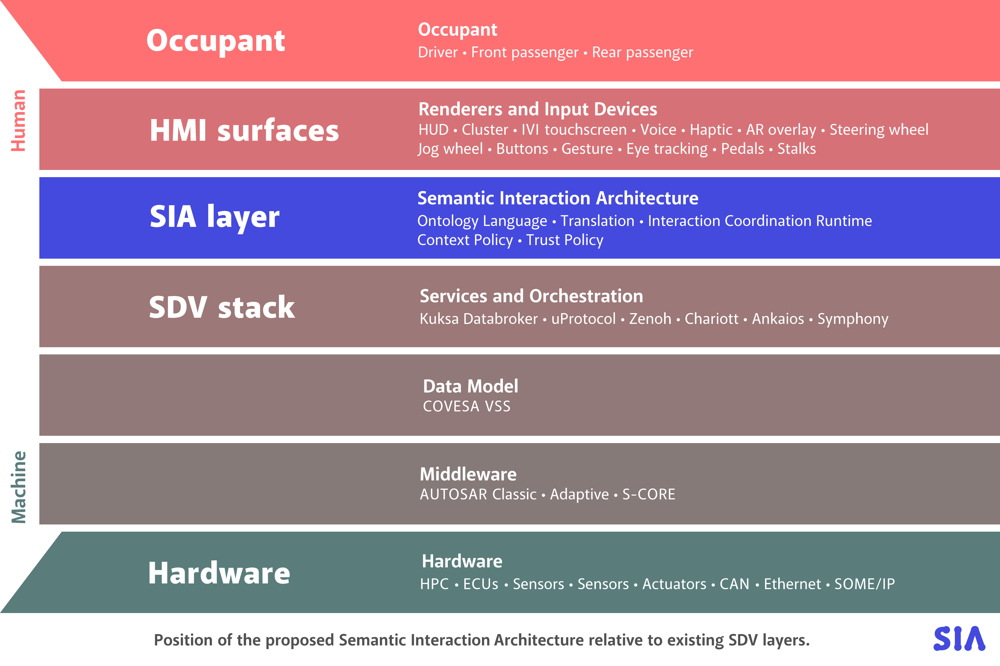
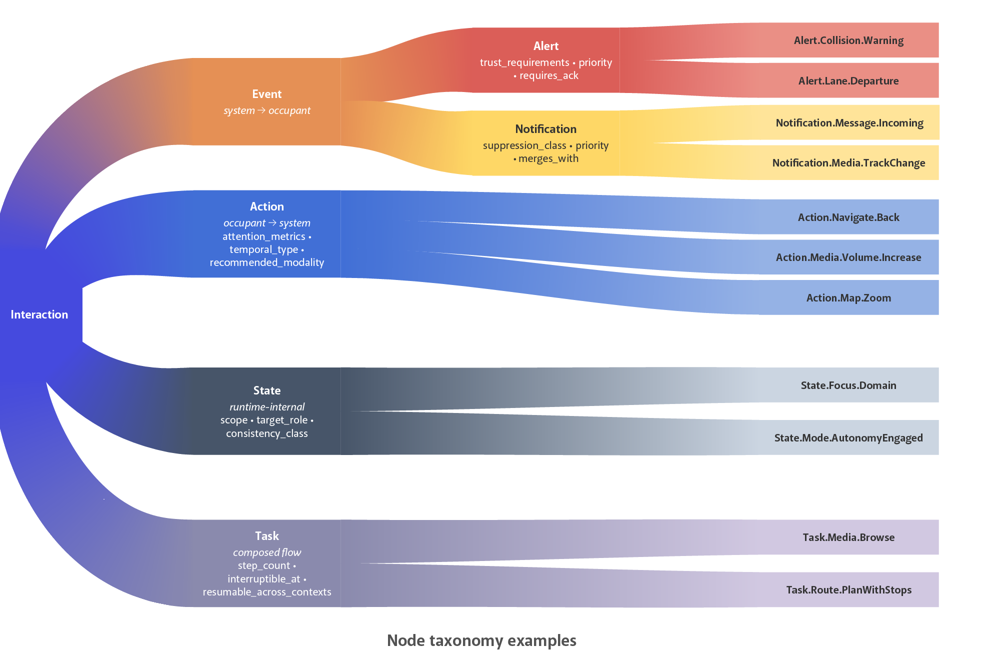

Ingress freshness
How long transport took before Trust Policy accepted the message.
acceptance − attestation ≤ max_ingress_age_msTry “receipt”, “charging”, “trust”, or “retention”.
SEMANTIC INTERACTION ARCHITECTURE · 0.4
A modern car has dozens of software systems, several screens, a voice assistant – and soon third-party apps and AI agents. All of them want your attention while you drive. SIA is a proposed mediation layer that decides which messages get through, where they may appear, and preserves bound evidence for each lifecycle outcome.
Vehicle platforms already use permissions and HMI rules, but those controls are usually platform-specific. They do not provide one portable contract that proves an emitter has authority to make a particular semantic claim.
Displays and voice channels still need local safety controls, but meaning, priority, context, and evidence are often expressed differently across products. That makes consistent enforcement and end-to-end audit difficult.
SIA adds a shared semantic contract and mediation boundary. Every message references a declared meaning; the boundary verifies who sent it, checks it is fresh and relevant, selects eligible outputs, and demands evidence of what happened.
One story runs through this whole page. Your car’s driver-assistance system (ADAS) detects a collision risk at highway speed. Follow that warning from the day its rules were written through delivery and the separate occupant-response window.

01 · LIFECYCLE
Six phases, in order, from design time to lifecycle closure. Each phase tells the collision-warning story first, then shows a representative excerpt of the artifact or trace at that boundary.
PHASE 01 · ONTOLOGY
◆ ARCHITECTURE
This diagram is generated from the same engine the Lab runs. Press play to send the genuine collision warning through it—every lit node and label below is the engine's real output, so the picture can never disagree with the specification.
Idle — press play to trace one genuine collision warning end to end.
02 · TRUST BOUNDARY
You met these eight questions in phase 03 of the lifecycle. Here each one is a defence: select a check to see the concrete attack it stops and what happens when it fails.
03 · TIME & CONTEXT
The eight checks decided who may speak. The next two questions are when a message is still worth delivering and where the vehicle currently is—and “recent”, “still true”, and “worth waiting for” turn out to be three different clocks.
How long transport took before Trust Policy accepted the message.
acceptance − attestation ≤ max_ingress_age_msHow long the message still describes useful current meaning.
now ≤ valid_until_msHow long an applicable but blocked interaction may remain held.
retention_expiry ≤ valid_until_msONE LABEL CAN'T DECIDE EVERYTHING
It does not mean the car is safe: another vehicle can still reverse into it. So a collision warning must fire even while charging, while a lane-departure warning is simply irrelevant when parked. Each interaction declares what it depends on, over six independent signed axes—not one blanket label.
Another vehicle may reverse into a stationary or charging car. Charging must not suppress an external collision threat.
applicability: "always"04 · DELIVERY & RESPONSE
The plan is made—now prove what actually happened. A renderer can prove it presented something. Only a separate occupant response can prove a human acknowledged it. SIA never lets one claim stand in for the other.
Renderer receipt means
“The selected output was received, presented, failed, or timed out.”
Occupant response means
“An authorised occupant acted—or the response window timed out.”
05 · CONTRACT EXPLORER
SIA 0.4 defines thirteen top-level machine-readable contracts, plus node-specific payload schemas. Pick any contract to inspect a representative excerpt derived from the validated repository examples.

Event branches—Alert and Notification; Action, State, and Task are reserved for future input and flow profiles. The per-family labels are early 0.3 vocabulary: acknowledgement became the occupant-response contract, suppression became the declared blocked disposition. Figure 4 of the position paper.06 · GUARANTEES & LIMITS
A professional implementation needs explicit boundaries as much as features. These eight deployment truths connect the tutorial to the normative requirements without hiding failure modes or claiming more than the protocol guarantees.
sia-minimal 0.4 standardises system-to-occupant Alert and Notification emissions. Action, State, and Task remain architectural types for future profiles and cannot be emitted under this profile.
Applicable interactions may continue, drop, defer, or coalesce according to the declaration. A retained item is bounded by validity, TTL, per-identity quotas, and deterministic re-evaluation; an inapplicable meaning closes without presentation.
Normative §8A plan chooses one of three success policies: any selected renderer presented, the primary presented, or all required renderers presented. Occupant response cannot start before that declared policy is satisfied.
Normative §11SIA does not claim distributed exactly-once delivery. Receipt processing is idempotent by receipt ID and monotonic by (attempt_id, receipt_sequence); deployments must prevent duplicate presentation where normal and fallback paths can overlap.
Unknown or stale context maps to safe_worst_case or fail_closed. Ingress freshness, semantic validity, and retention TTL remain distinct, and each deployment defines clock skew and behaviour when secure time is unavailable.
Runtime instances bind all three version axes. Unsupported wire contracts are rejected; older catalogs are accepted only through a compatibility table. Unknown fields never act as an implicit extension mechanism.
Normative §3Unauthorised claims fail closed. Critical delivery also needs a deployment-defined fail-operational path with latency budgets, watchdog and restart behaviour, unavailable-dependency handling, and a certified fallback that does not create duplicate output.
Normative §13Emitters are rate-limited; nonce caches, retained queues, and audit storage are bounded. Evidence records minimise payload and PII, while persistent retention requires encryption, integrity protection, and an explicit privacy policy.
Normative §1407 · IMPLEMENT & TEST
This section is for engineers. The normative contracts behind the tutorial have executable tests: strict schemas, cross-artifact invariants, cryptographic examples, and a conformance suite scoped so each implementation can validate the boundary it owns.
npm cinpm testnpm run validate -- examples/v0.4/collision-warning.instance.jsonnpm run conformance -- runtimeCHOOSE YOUR BOUNDARY
examples/v0.4/ holds one validated, cryptographically signed instance of every contract—the same collision-warning story this page tells. You do not write them; you clone the repo and point the validator at them, or copy one as the starting template for your own node.
Each artifact is validated in JSON Schema 2020-12 strict mode, then against cross-artifact invariants (does the instance bind the exact declaration digest? is the render plan deterministic? is retention inside validity?), then its signature and canonical digests are recomputed. Failures print in plain language, not raw schema paths.
npm test runs the full suite; npm run conformance -- <role> runs only the vectors your class must pass. Vectors are language-neutral (a base example plus an RFC 7386 patch), so a C++ or Rust runtime reuses them without touching this JavaScript reference.
✓ collision-warning.instance.json (runtime-instance)
envelope: closed, no reserved fields
declaration digest: matches installed catalog
attestation: ES256 signature verified
valid against runtime-instance.schema.json + invariants
✗ tampered-instance.json (runtime-instance)
(document root): unexpected field "priority" — the runtime
envelope is closed; a runtime instance must not carry policy overrides.
/attestation/algorithm: value must be one of ["ES256","EdDSA","HMAC-SHA-256"].08 · FAQ
Honest answers about effort, dependencies, and what SIA does and does not demand of an existing stack.
It depends entirely on which conformance class you own. An emitter (an ADAS or service that already produces events) adds a small step: wrap its output in the closed instance envelope, bind the declaration digest, and sign it—a few hundred lines against the schema. A renderer (a cluster or IVI supplier) consumes a render plan and returns an authenticated receipt—it does not implement policy at all. Only the runtime class—the party that owns the mediation boundary, typically one team per platform—implements the full lifecycle. The profile is deliberately small (2 node families, 3 renderers, 6 axes) precisely so a first runtime is weeks, not years.
Three capabilities most SDV platforms already have: a JSON Schema validator, a signing/verification primitive (ES256, EdDSA, or HMAC—whatever your HSM already exposes), and a canonical serializer (RFC 8785, ~30 lines). No new runtime, no OWL reasoner, no graph database. SIA is a contract and a state machine, not a framework. It sits above your data and service layers (VSS, Kuksa, uProtocol, AUTOSAR) and below your renderers—it replaces none of them.
Yes, three that most platforms do not formalise today. 1) Key and credential management for interaction authority—actor classes must be attested, so emitters need signing keys and a revocable credential registry (an extension of existing UNECE R155 / ISO 21434 key infrastructure, not a new PKI). 2) A signed context authority—the six axes must arrive as an authenticated snapshot with source and confidence, so a trusted component must sign context. 3) Deployment-defined policy documents—clock skew, secure-time fallback, attention budgets, and privacy retention are declared and audited, not left implicit. None of these are new hardware; they formalise decisions vehicles already make informally.
Every decision is deterministic and O(1) against the catalog: schema validation, a hash, a signature check, and table lookups. No runtime reasoning. The two-tier trust model uses fast symmetric authentication (HMAC) per interaction after an asymmetric session handshake, keeping the critical path cheap. A critical alert is never blocked by an attention-budget calculation—the safety mandate is structural, evaluated before the budget.
No. SIA 0.4 is a pre-standard draft circulated for review and falsification. It is deliberately small so it can be prototyped, tested, and critiqued before any standardisation. Passing the conformance suite proves contract compliance, not regulatory compliance—that remains the deployment's responsibility, with empirical testing. The recommended path is: prototype on a bench, compare against your existing HMI stack, then decide whether it earns standardisation.
How versions evolveNo. The contracts are plain JSON Schema, the vectors are language-neutral, the signing rule is a public RFC, and the licence is open. Renderers stay external and keep their own visual and acoustic design—SIA standardises the interaction contract, not the look of any surface. There is no SIA runtime you must buy; the repository ships a reference implementation you can replace entirely.
09 · SOURCE MAP
This page explains the model; the specification, schemas, registries, and vectors remain the source of truth.
Lifecycle, invariants, compatibility, and conformance.
Read the contract SECURITYThreats, mitigations, non-goals, and residual risk.
Inspect threats DESIGNA meaning-first checklist for new semantic nodes.
Author a node MACHINE-READABLEStrict JSON Schema 2020-12 runtime contracts.
Browse schemas EXECUTABLESigned end-to-end artifacts for profile 0.4.
Browse examples REFERENCENormative vocabulary in one compact reference.
Look up a termREADY TO TEST THE MODEL?
Run genuine, spoofed, stale, replayed, failed-delivery, and retained interactions in the executable Lab.